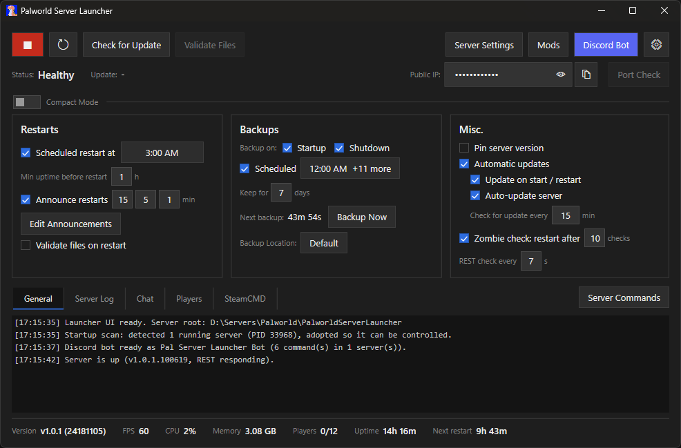

SSyl
I take things apart to see how they work.
About
I'm a Canadian-American with a habit of taking things apart to see how they work. I've been at it since I was sneaking Doom onto my grandparents' DOS machine they used for accounting. They didn't know. It ran great.
Professionally (if you can call me that), I started out in web development and QA, worked as a system administrator managing servers and databases, and have been building PCs since I was a kid. These days I mostly write game mods - digging into game engines, writing tools, and occasionally patching the modding frameworks themselves when something breaks. I mod whatever I'm playing at the time, so the list jumps around a lot and some of the most endorsed things I've released are ones I've long since moved on from.
I also run a homelab and a couple of VPSs. I tell myself it's to save money, but usually it costs more in time spent and often in dollars too, but where's the fun if you don't make it your own at least a little bit? Jack of all trades, master of null (or nil?).
Work
Mods
-
True Mercy Palworld
Stops burn and poison from killing a pal that Mercy is keeping alive for capture. Your 10,000 damage fireball can't kill it, then a 1 damage burn tick does.
-
Ammo Counter Abiotic Factor
Replaces the HUD's magazine capacity with the ammo you actually have in your inventory, colour-coded by how much is left. Now bundled into Rebiotic Recalibration.
-
Rebiotic Recalibration Abiotic Factor
A quality-of-life collection built on UE4SS. 15+ features, tweaks and bug fixes, each independently configurable.
-
Security Office Keypad Enabler Abiotic Factor
Makes the Level 2 security office keypad keep working once you've hacked it, so the shutters open and close from outside instead of being a one-way trip.
-
Defogger Oblivion Remastered
Splits fog control by world type, so Cyrodiil, interiors, Oblivion realms and the Imperial City each get their own start distance, fade-in and colours instead of sharing one global setting.
- 27 mods on Nexus, 27,578 unique downloads between them. Full list
Bug reports & repros
-
Overlapping ExecuteInGameThread callbacks UE4SS
Nested callbacks crash
process_simple_actionsin UE4SS 3.0.1-932. Reported upstream with a minimal reproduction mod; still open and 82 comments deep. -
LoadMap hooks fire for one mod only UE4SS
RegisterLoadMapPreHookandRegisterLoadMapPostHookonly fire for whichever mod registers first. Ten test mods isolate it, showingInitGameStatehooks firing correctly for all ten while LoadMap fires for one.
Things I Do
- Game Modding
- Lua, C++, C# across UE4SS, SKSE, BepInEx - mostly survival and RPG games. Sometimes patching the frameworks themselves.
- Reverse Engineering
- Poking at undocumented APIs, game engines, and keyboard firmware to figure out what makes them tick.
- Homelab / Self-Hosting
- Costs more than it saves, but that's not the point.
- Sysadmin
- Servers, databases, VPSs. Paid to do it, then kept doing it at home for free.
- Home Automation
- Home Assistant, smart home integrations, making lights do things they probably shouldn't.
- AI Tooling
- Building MCP servers that bridge AI with debuggers, game engines, and dev tools.
- PC Building
- Since I was a kid. Still can't leave a build alone for more than six months.
- Gaming
- Survival games, RPGs, anything I can mod. Playing a game stock feels like leaving the house without keys.
- Customizing Everything
- Editor themes, desktop skins, folder icons, keyboard layers. If it has defaults, they're wrong.